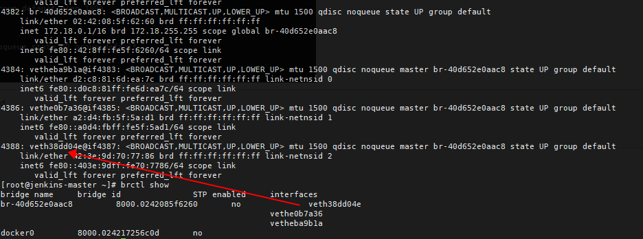

容器网络理解
容器网络理解。
容器中的应用生成网络请求 -> veth-container -> veth-host -> 网络桥接（如docker0）-> 宿主机路由 -> iptables ->物理网卡 -> 外部网络
1、veth-container -> veth-host
Docker 或 Kubernetes 创建一对虚拟网卡（veth pair），一端放在宿主机上（称作veth-host），另一端放在容器中（称作veth-container）。 宿主机上的那端虚拟网卡被连接到一个网络桥接（如 Docker 默认的docker0桥），这个桥接允许网络包在各个容器以及宿主机之间转发。
这种机制的工作流程如下：
-
当Docker容器启动时，Docker服务会创建一对
veth接口。假设对于特定的容器创建的veth接口被称为vethXXX和vethYYY。 -
vethXXX这一端被放入容器的网络命名空间，并通常被命名为eth0，这样容器内部的进程就可以通过这个接口发送和接收网络数据。而vethYYY这端留在宿主机的全局网络命名空间中。 -
vethYYY这端接口将被连接到Docker的虚拟网桥上，例如默认的网桥docker0。这个虚拟网桥允许容器之间在相同宿主机上相互通信，同时也允许容器与宿主机之间的通信。
{kind=link}
[root@jenkins-master ~]# docker inspect -f '{{.State.Pid}}' nginx-dd
29044
[root@jenkins-master ~]# nsenter -t 29044 -n ip addr
2、veth-host -> 网络桥接（如docker0）
 veth pair 在宿主机上的接口加入网桥中。
{kind=link}
3、网络桥接（如docker0）-> 宿主机路由
在 CentOS 系统中，网桥 (bridge) 是一个工作在 OSI 模型的第二层（数据链路层）的设备，它负责连接两个或多个网络段，使它们表现得像是同一网络。它通过 MAC 地址来转发流量；然而，当我们在网桥上配置了一个 IP 地址时，这个网桥也可以参与第三层（网络层）的操作，比如路由决策。
这种配置允许网桥设备参与到操作系统的 IP 路由决策中。一旦一个网桥配置了 IP 地址，就跟其他任何网络接口一样，它会出现在操作系统的路由表中。路由表决定了 IP 数据包如何从一个接口（可以是物理接口，也可以是逻辑接口如网桥）被路由到另一个接口。
网桥上配置的 IP 地址使得网桥可以：
- 接收发往其 IP 地址的流量。
- 发送数据包到网络上，这些数据包会经路由表中定义的下一跳路由走向目的地。
- 作为网桥上其他设备的网关。
通常，当一个桥接网络中的设备要发送一个数据包到另一个网络段（可能是通过互联网）时，数据包会送到网桥设备，从那里根据 CentOS 的路由表决策来确定下一步行动。如果路由表中有匹配该目的地的路由，数据包将根据这个路由进行转发。
这是一个简化的例子：
- 设备A（连接到网桥 br0 网络）发送数据包到设备B（互联网上的某个IP地址）。
- 数据包首先到达网桥 br0。
- 如果 br0 有一个 IP 地址，它会检查它的路由表来决定如何处理这个数据包。
- 如果路由表指示它应该通过某个物理接口发送（比如 eth0），它会将数据包发到这个接口，该接口再把数据包送到外部网络。
所以即便网桥是第二层设备，一旦配置了 IP 地址，它就能够利用操作系统的路由表进行第三层的路由。这也是为什么在一些设置中，网桥可以作为一个虚拟机或容器环境中的默认网关。
{kind=link}
4、宿主机路由 -> iptables
路由表负责决定本地生成的网络数据包该如何在宿主机的不同网络接口之间转发，是否要转发到物理网卡，或者是留在本地处理。 iptables负责对经过宿主机的数据包进行检查，基于一系列的规则进行修改（比如NAT），或者决定是否允许特定的数据流通过。
{kind=link}
Filter表
*filter
:INPUT ACCEPT [244972180:39059491022]
:FORWARD DROP [0:0]
:OUTPUT ACCEPT [439290180:389638265797]
:DOCKER - [0:0]
:DOCKER-ISOLATION-STAGE-1 - [0:0]
:DOCKER-ISOLATION-STAGE-2 - [0:0]
:DOCKER-USER - [0:0]
-A FORWARD -j DOCKER-USER
-A FORWARD -j DOCKER-ISOLATION-STAGE-1
-A FORWARD -o br-40d652e0aac8 -m conntrack --ctstate RELATED,ESTABLISHED -j ACCEPT
-A FORWARD -o br-40d652e0aac8 -j DOCKER
-A FORWARD -i br-40d652e0aac8 ! -o br-40d652e0aac8 -j ACCEPT
-A FORWARD -i br-40d652e0aac8 -o br-40d652e0aac8 -j ACCEPT
-A FORWARD -o docker0 -m conntrack --ctstate RELATED,ESTABLISHED -j ACCEPT
-A FORWARD -o docker0 -j DOCKER
-A FORWARD -i docker0 ! -o docker0 -j ACCEPT
-A FORWARD -i docker0 -o docker0 -j ACCEPT
-A DOCKER -d 172.18.0.2/32 ! -i br-40d652e0aac8 -o br-40d652e0aac8 -p tcp -m tcp --dport 80 -j ACCEPT
-A DOCKER-ISOLATION-STAGE-1 -i br-40d652e0aac8 ! -o br-40d652e0aac8 -j DOCKER-ISOLATION-STAGE-2
-A DOCKER-ISOLATION-STAGE-1 -i docker0 ! -o docker0 -j DOCKER-ISOLATION-STAGE-2
-A DOCKER-ISOLATION-STAGE-1 -j RETURN
-A DOCKER-ISOLATION-STAGE-2 -o br-40d652e0aac8 -j DROP
-A DOCKER-ISOLATION-STAGE-2 -o docker0 -j DROP
-A DOCKER-ISOLATION-STAGE-2 -j RETURN
-A DOCKER-USER -j RETURN
COMMIT
# Completed on Tue Feb 20 15:06:32 2024
FORWARD 规则：
-
-A FORWARD -j DOCKER-USER： 将所有 FORWARD 链的流量定向到名为 DOCKER-USER 的自定义链。这样做是为了给用户提供在自定义链中插入他们自己的 FORWARD 规则的机会，不通过 Docker 自动生成的规则。 -
-A FORWARD -j DOCKER-ISOLATION-STAGE-1： 此规则把流量送到隔离阶段链。Docker 使用这些规则来阻止不同网络的容器之间的直接通信，实施网络隔离。 -
-A FORWARD -o br-40d652e0aac8 -m conntrack --ctstate RELATED,ESTABLISHED -j ACCEPT： 此规则允许与已经建立或相关联的连接发出的流量通过 Docker 网桥br-40d652e0aac8。 -
-A FORWARD -o br-40d652e0aac8 -j DOCKER： 对于发出的流量，如果它是从网桥br-40d652e0aac8传出的，就跳转到 DOCKER 链。 -
-A FORWARD -i br-40d652e0aac8 ! -o br-40d652e0aac8 -j ACCEPT： 这条规则允许所有进入网桥br-40d652e0aac8且不是从该网桥传出的流量。 -
-A FORWARD -i br-40d652e0aac8 -o br-40d652e0aac8 -j ACCEPT： 允许所有从网桥br-40d652e0aac8进来同时也从同一网桥出去的流量。这样的流量发生在同一 Docker 网桥内部的不同容器之间。
DOCKER 链：
-A DOCKER -d 172.18.0.2/32 ! -i br-40d652e0aac8 -o br-40d652e0aac8 -p tcp -m tcp --dport 80 -j ACCEPT： 此规则允许任何不是来自网桥br-40d652e0aac8的流量到达 IP 为 172.18.0.2 的设备（容器）上的 TCP 端口 80。
DOCKER-ISOLATION-STAGE 链：
-
-A DOCKER-ISOLATION-STAGE-1 -i br-40d652e0aac8 ! -o br-40d652e0aac8 -j DOCKER-ISOLATION-STAGE-2： 如果流量是从网桥br-40d652e0aac8进来且不是传出同一网桥的，则定向到隔离阶段 2。 -
-A DOCKER-ISOLATION-STAGE-1 -i docker0 ! -o docker0 -j DOCKER-ISOLATION-STAGE-2： 对于进入默认的 Docker 网桥docker0而且不是离开它的流量，跳转到隔离阶段 2。 -
-A DOCKER-ISOLATION-STAGE-1 -j RETURN： 所有不符合隔离规则的流量结束隔离阶段 1 并返回到 FORWARD 。 -
-A DOCKER-ISOLATION-STAGE-2 -o br-40d652e0aac8 -j DROP： 丢弃所有传出网桥br-40d652e0aac8的流量，以确保网络隔离。 -
-A DOCKER-ISOLATION-STAGE-2 -o docker0 -j DROP： 丢弃所有传出网桥docker0的流量，同样为了网络隔
{kind=link}
Nat表
# Generated by iptables-save v1.4.21 on Tue Feb 20 15:06:32 2024
*nat
:PREROUTING ACCEPT [6782554:235185454]
:INPUT ACCEPT [6770892:234485508]
:OUTPUT ACCEPT [10758364:662367917]
:POSTROUTING ACCEPT [10792762:664241249]
:DOCKER - [0:0]
-A PREROUTING -m addrtype --dst-type LOCAL -j DOCKER
-A OUTPUT ! -d 127.0.0.0/8 -m addrtype --dst-type LOCAL -j DOCKER
-A POSTROUTING -s 172.18.0.0/16 ! -o br-40d652e0aac8 -j MASQUERADE
-A POSTROUTING -s 172.17.0.0/16 ! -o docker0 -j MASQUERADE
-A POSTROUTING -s 172.18.0.2/32 -d 172.18.0.2/32 -p tcp -m tcp --dport 80 -j MASQUERADE
-A DOCKER -i br-40d652e0aac8 -j RETURN
-A DOCKER -i docker0 -j RETURN
-A DOCKER ! -i br-40d652e0aac8 -p tcp -m tcp --dport 80 -j DNAT --to-destination 172.18.0.2:80
COMMIT
# Completed on Tue Feb 20 15:06:32 2024
# Generated by iptables-save v1.4.21 on Tue Feb 20 15:06:32 2024
这些规则似乎配置自 Docker 以管理容器的网络通信。下面我将一一解释它们的含义：
-A PREROUTING -m addrtype --dst-type LOCAL -j DOCKER-
这条规则添加到
PREROUTING链，它匹配所有目标类型为LOCAL的数据包，并将它们跳转到一个名为DOCKER的自定义链（这是 Docker 使用的）。 -
-A OUTPUT ! -d 127.0.0.0/8 -m addrtype --dst-type LOCAL -j DOCKER -
这条规则添加到
OUTPUT链，它表示如果输出数据包的目的地址不是本地回环地址（localhost，也就是127.0.0.0/8之外），并且目的类型为LOCAL，也将它们跳转到DOCKER链。 -
-A POSTROUTING -s 172.18.0.0/16 ! -o br-40d652e0aac8 -j MASQUERADE -
这条规则添加到
POSTROUTING链，它会对源地址为172.18.0.0/16的数据包，并且不是从接口br-40d652e0aac8出去的，执行MASQUERADE动作。MASQUERADE类似于SNAT，但源IP会根据出口接口的IP动态变化，常用于动态IP场景，如拨号连接互联网。Docker 使用这个来允许容器访问外部网络。 -
-A POSTROUTING -s 172.17.0.0/16 ! -o docker0 -j MASQUERADE -
与第3点类似，这个规则应用于源地址为
172.17.0.0/16的数据包，不是从接口docker0出去的。 -
-A POSTROUTING -s 172.18.0.2/32 -d 172.18.0.2/32 -p tcp -m tcp --dport 80 -j MASQUERADE -
该规则针对从单个IP
172.18.0.2发出、目的地也是此IP、以及目的端口为80的TCP数据包，做MASQUERADE处理。这通常用于处理容器与自己发起跟自己的连接。 -
-A DOCKER -i br-40d652e0aac8 -j RETURN -
对于通过
br-40d652e0aac8接口进入的数据包，这条规则在DOCKER链中直接返回，即不做特殊处理。 -
-A DOCKER -i docker0 -j RETURN -
类似上一条规则，通过
docker0网桥接口进入的数据包不做处理，直接返回。 -
-A DOCKER ! -i br-40d652e0aac8 -p tcp -m tcp --dport 80 -j DNAT --to-destination 172.18.0.2:80 - 该规则对非从
br-40d652e0aac8接口进入、目的端口为80的TCP数据包，执行DNAT动作，修改目的地址为172.18.0.2:80。这通常是在做端口转发，将到达宿主机某端口的数据包转发到特定容器的端口。
以上规则集是 Docker 在宿主机上配置的一部分，以实现容器之间以及容器与外部网络之间的流畅通信。通过这些规则可以看出 Docker 使用 iptables 的定制链来处理容器网络的复杂性，而可识别性则由 Docker 本身维护。